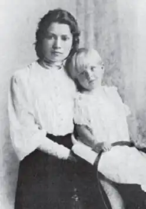

15.06.1902 – 28.04.2005
Наталя Лівицька-Холодна народилася 16 червня 1902 року на родинному хуторі біля Гельм’язіва (нині Золотоніського району на Черкащині). Дитинство до п’яти років вона провела у бабусі. Ця частина дитинства закінчилася, коли на хуторі сталася пожежа, але в пам’яті залишися назавжди як романтичний чарівний світ:
Вже мені не вчитися ходити босими ногами по стерні й будяки збирать, мов квіти, в бур’яні, не скакати в клуні з бантини, мов з сідла… Далі було життя з батьками. Батько працював адвокатом. Була у житті дівчини гімназія вЗолотоноші, перші щоденники-сповіді, перша закоханість… Але політика вирішила долю красуні. Батько Наталії був членом уряду УНР, тому родина мусила емігрувати після національно-визвольних змагань 1917—1922 рр. до Чехословаччині. Середню освіту здобула в Подєбрадах — закінчила матуральні курси 1923 р. Цього ж року вступали до празького Карлового університета, де Наталія училася в університеті на факультеті романських мов. Під час еміграції виїздили разом із іншими родинами урядовців Центральної Ради. Так доля звела Наталю з Петром Холодним, сином художника, заступника міністра освіти УНР Петра Холодного. Молоді люди покохали одне одного. Подружилася вона і з Оленою Телігою, Юрієм Дараганом, Євгеном Маланюком… "Маленька дитинка моя з половецьким розрізом очей…", – так називав дівчину з Золотоніщини Наталю Лівицьку-Холодну поет Євген Маланюк, серцем якого вона заволоділа. Наталя й класик української літератури Євген Маланюк познайомилися восени 1923 року в чеському містечку Подєбради, де на той час існувала Українська господарська технічна академія. Одного разу під час розмови з друзями Лесею Крат та її братом Борисом на вечірці до них підійшов якийсь чоловік і заговорив до Лесі. Про подальший перебіг подій Наталя Лівицька розповідала так: "Раптом Леся до мене: "Натусю, дайте мені Вашу квітку". Я без роздумів вийняла з волосся квітку і подала їй. Раптом із здивуванням побачила, що та квітка помандрувала до її співрозмовника… Він заклав її до петлі свого жакета і, низько вклонившись, подякував мені". З волі випадку на вечірці не було Петра Холодного – майбутнього чоловіка поетеси, з яким у неї вже тоді почався роман. Наталя Лівицька не могла не захопитися Євгеном Маланюком. Надто романтично відбулося їхнє знайомство, і надто привабливим він був на той час: і зовнішньо – гарний, високий, стрункий, атлетичний; і літературно – вже визнаний поет. Саме Євген Маланюк познайомив її із найкращими тоді зразками поезій, завдяки йому вона відвідувала літературні збори, творчі вечори, він був слухачем і критиком її перших віршів. Наталя Лівицька-Холодна згадувала: "…Він одного разу на якихось літературних зборах представив мене присутнім словами: "Наша Анна Ахматова". Порівняння з Ахматовою, якою тоді зачитувалася Наталя, збентежило молоду дівчину, але, безумовно, дуже потішило. На жаль, Євген Маланюк сприйняв захоплення Наталі за кохання. Але Наталя була з категорії розумних жінок. Їй була приємною увага, закоханість Маланюка, разом із тим не відчувала шаленого чуття і обрала надійного кандидата. 31 серпня 1924 р. вона пішла під вінець із Петром Холодним, наступного року народила дочку Іду. А Маланюк у той же день і час вінчався із Зоєю Равич. Пізніше вони листувалися, були друзями, але закоханість пана Євгена інколи виривалася докорами за відмову. Наталя стала Музою і палким коханням Євгена Маланюка, але її серце не відгукнулося. Які ж наворожили зорі, Що два життя в людській імлі – Побачать віддалі прозорі, Розквітнуть казкою землі? Який же янгол зореокий З нічних небес на нас вказав, І Бог забув про синій спокій, І в вічність нас заколисав! Досить швидко вона зближується з іншими поетами празької школи, зокрема з Дараганом. У1927 році переїздить до Варшави, студіює філологію при Варшавському університеті, де стала однією з організаторів літературної групи "Танк". Друкувалась в альманасі "Сонцецвіт". Тут, у Варшаві, до неї прийшло "гірке питво" кохання. Вона втратила розум після знайомства з Ігорем Лоським, інженером, одним із небагатьох живих героїв Крутів. Одна за одною почали з’являтися пристрасні й ніжні поезії Наталі Лівицької-Холодної. П’ю трунок півночі, зіллям відьомським насичений, п’ю трунок закінчення і відчаю… поки уп’юсь докраю. Місяць – постійний товариш – дивиться в око зловісно. Чом ти вже зілля такого не звариш, щоб від нього повісилась. Та Ігор теж був одружений із солісткою хору Кошиця. У 1936 році у Львові її коханий помер від голоду. Після Другої світової війни Наталя Лівицька мешкала в західнонімецьких містах Оффербах, Майнцкастель та Етлінген. 1950 року вона переїздить до США і проживає в Йонкерсі поблизу Нью-Йорка, де стає членом управи Союзу українок Америки. Поезія Наталі Лівицької-Холодної за змістом і естетичною природою — унікальне явище в світовій літературі. Це віршований роман життя людини — від ранньої юності до глибокої старості. В ньому переплелись два сюжети — інтимний світ жінки і доля емігрантки. Звідси — лірико-драматичний характер її поезії. ЇЇ лірична героїня— це натура сильна, вольова й одночасно граціозна й ніжна. Мистецькі уподобання Наталі Лівицької-Холодної сформували і український фольклор, і модерне європейське мистецтво, і сучасні їй українські митці, зокрема представники так званої празької школи із задекларованими ними ідеями відродження української духовності та високими художніми вимогами. У своїй ліриці поетеса знаходить багаті можливості для тонкої гри живописних ефектів, досконалості кольористики. Особиста лірика Лівицької-Холодної позначається сильними тематичними впливами французького символізму, з домішками пізнішого декадансу. Крім того, помітні відсвіти поезії Анни Ахматової. Пристрасть у її інтимній ліриці таємнича, приваблива аж до самозгуби. Кохання майже завжди заборонене, приховане; дуже часто жорстоке й буремне. Лірична героїня зваблює сильних чоловіків гіпнотичною силою "фам фаталь". Разом з тим, поетеса часом говорить про спокій, серйозність і тривалість у коханні. У техніці Лівицької-Холодної панує вишукана гармонія, стрункість і легкість. В її віршах не знайдемо ні традиційних персонажів слов’янської міфології, ні героїки походів княжої дружини, ні насичення пейзажу язичницькою символікою. Лірична героїня Наталі Лівицької-Холодної відчуває в собі темний голос крові й уявляє себе то "поганкою з монгольських степів", то бранкою татарина, яка наділена відьомським хистом любовного привороту, що несе з собою смерть, вона мовби посестра гоголівської сотниківни. Наталя Лівицька-Холодна не піддавалася спокусі прямолінійної політичної риторики, прагнула зберегти право на творчу й людську індивідуальність, право на повноту емоцій з погляду жінки. Це не завжди знаходило прихильність і розуміння у цей складний, до краю заідеологізований час. Тож не дивно, що тільки значно пізніше збірка "Вогонь і попіл" (1934) була оцінена як неординарне художнє явище, що виникло на перехресті літературних впливів і взаємозв’язків й знаходить продовження в декадансі. Поцілую — і до скону будеш прагнуть уст моїх, і затруїть кров червону, кров юначу п’яний гріх. ("Чорний колір — колір зради…") Збірка "Сім літер" (1937) цілком інша за темою й за тональністю. Назва прочитується як "Україна", основний мотив — емігрантська доля, трагедія степового перекотиполя на бруках європейських міст, туга за рідною землею. У віршах Наталі Лівицької-Холодної віднаходять і сліди прихованої полеміки з іншими представниками "празької школи" — Є. Маланюком, Ю. Липою, О. Ольжичем. Ця полеміка спричинена не браком національно-патріотичних почуттів поетеси, а обстоюванням права залишатися жінкою, просто людиною. Наталя Лівицька-Холодна — поетеса камерного амплуа в найкращому розумінні цього слова. Музика її поезії заслуговує на увагу. Її перу належать також поетичні збірки "Поезії, старі і нові" (1985), біографічна повість "Шлях велетня" (1955); оповідання для молоді "Синя квітка", "Я бачив Симона Петлюру", "Розповідь про Крути" (1956). Перекладала твори Ш. Бодлера, П. Валері, Піранделло. Вісімнадцятирічною дівчиною залишила Наталя Лівицька-Холодна Україну, з того часу пройшла поневіряння країнами: Польща, Чехія, Німеччина…Пережила поетеса і переїзд до США, втрату батька, брата, чоловіка. Упродовж 17 років Наталя Лівицька-Холодна була робітницею на фабриці. Мешкала у притулку для самотніх людей. Інколи її навідувала донька Іда Холодна —Харина, грала їй на фортепіано. Це нічого, що вже не такі вечори ні взимку, ні весною. Ти їх любиш тепер із кимсь, а я сама з собою. І так добре мені в самоті: самота – то гордість духа. Це нічого, що очі вже не ті і що вжені батька, ні друга. Вона не любила обличчя "старості собачої", годинами сиділа, обкладена листами й записками, залишаючись вічною оптимісткою, яка так хотіла жити. Я не хочу медичної ласки, я не хочу себе воскрешать. Коли буде остання поразка, коли тіло залишить душа, я не скнітиму зайвим трупом на землі, що прекрасна така, і засмічувати не буду плюскіт хвилі й цвіт вишняка. Наталя Лівицька-Холодна померла 26 березня 2005 року в Канаді.